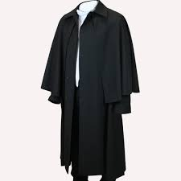
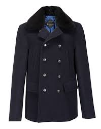
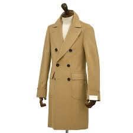
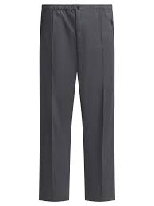
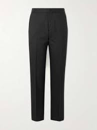
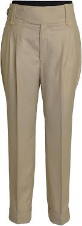

El epítome de la elegancia urbana. Un abrigo formal de lana o cachemira, corte recto y largo hasta la rodilla, perfecto sobre trajes de sastre.
Características
Solapas de muescas
Terciopelo en el cuello
Sin costuras visibles

En Stock
Inverness Cape
11,500 GTQ
Descripción
Una prenda histórica asociada a la aristocracia escocesa. Posee mangas abiertas integradas en la capa, ideal para quienes buscan un estilo único y erudito.
Características
Sin costuras laterales
Cuello alto
Tejido de tweed fino

En Stock
Peocat de Gala
11,999 GTQ
Descripción
Inspiración naval elevada con botones de plata o grabado heráldico. Confeccionado en lana Melton ultra densa para mantener la estructura y el calor absoluto.
Características
Corte corto estilizado
Solapas de pico
Forro de seda satinada

En Stock
Polo Coat
17,000 GTQ
Descripción
Un clásico de la Ivy League en lana de camello. Originalmente usado por jugadores de polo, proyecta un lujo relajado, atlético y muy distinguido.
Características
Doble botonadura
Bolsillos de parche
Puños vueltos

En Stock
Calvary Twill
3,550 GTQ
Descripción
Pantalones de herencia ecuestre, extremadamente duraderos y elegantes. Su tejido en diagonal proyecta una imagen de caballero rural tradicional y muy bien posicionado.
Características
Gran resistencia
Estilo clásico
Ajuste cómodo

En Stock
Tuxedo Trousers
4,500 GTQ
Descripción
Lana escocesa tejida artesanalmente. Ideales para el aire libre, ofrecen una paleta de colores tierra que conecta con la tradición de las fincas europeas.
Características
Resistente al agua
Patrón de espiga
Textura robustas

En Stock
Gurkha Pants
6,800 GTQ
Descripción
De origen militar y adoptados por la élite. Su sistema de doble hebilla en la cintura elimina la necesidad de cinturón, ofreciendo estética impecable.